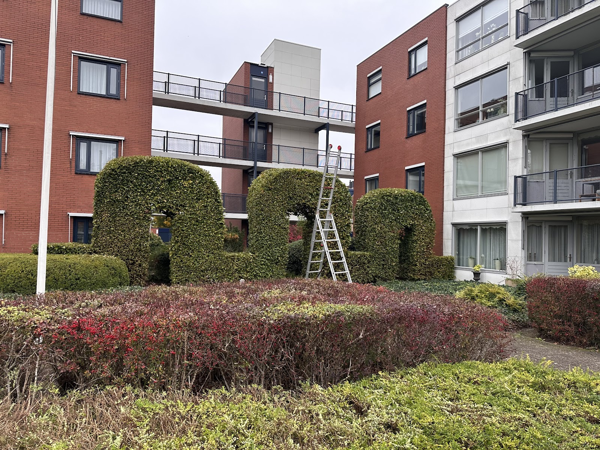

Bedrijventerreinen, hotels en bungalowparken
Uw terrein is uw visitekaartje. Groen zorgt voor een goede presentatie naar buiten en een prettige werkomgeving voor u, uw klanten en uw medewerkers. Hovenier Buitenweg heeft meerdere hotels, bungalowparken en bedrijventerreinen in onderhoud. U besteedt het volledig uit en houdt uw handen vrij voor uw eigen vak.